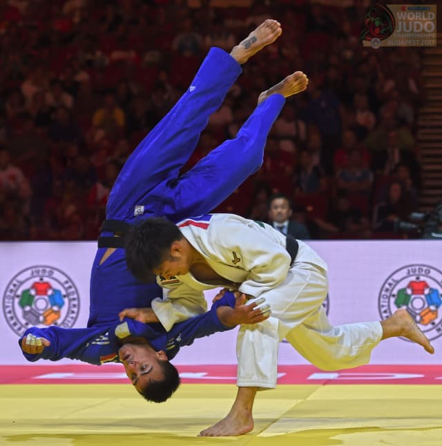

Judo Links
Books
Articles
Travis Stevens & Injury Mindset
Kosei Inoue
Wikipedia Artcles
Satoshi Ishii
Keiji Suzuki
Masahiki Kimura
Judo Ontario/Canada Info & Oppurtunities
Blogs
JudoFan.com, instructor in Japan
Videos
Japanese Olympic Team Announcement
Physio
Studies
Superstar & Paid Content
Superstar Judo - Kosei Inoue